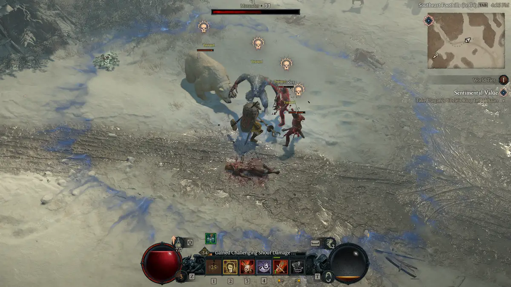

A brutal, physical warrior, the Barbarian roams around the battlefield constantly, dishing heavy damage and wielding an array of powerful weapons with ease.
With the Arsenal system, Barbarians can swap between different types of weapons, such as from a heavy two-handed mace to a pair of sharp, agile hand axes, depending on the situation, skill, and your player needs.
The Arsenal can be composed out of two two-handed and two one-handed weapons, with affixes applying from all four at once, but only one or two at a time used to resolve attacks.
With the Arsenal system, Barbarians can swap between different types of weapons, such as from a heavy two-handed mace to a pair of sharp, agile hand axes, depending on the situation, skill, and your player needs.
The Arsenal can be composed out of two two-handed and two one-handed weapons, with affixes applying from all four at once, but only one or two at a time used to resolve attacks.
